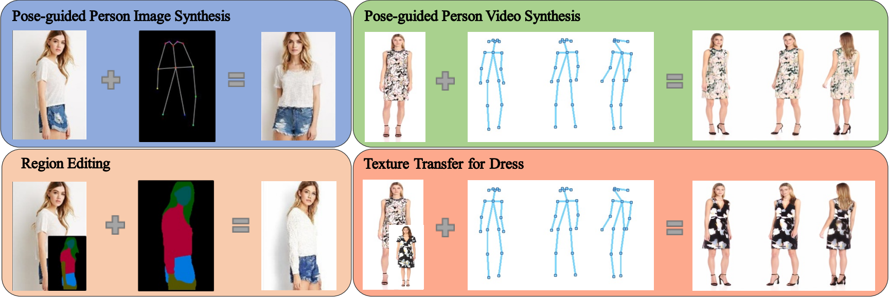
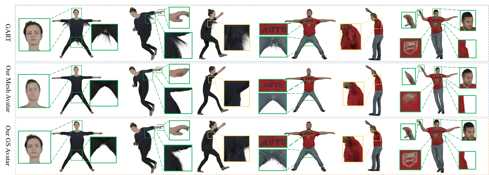
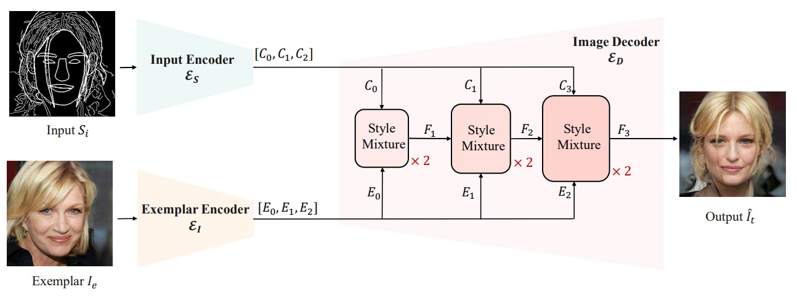
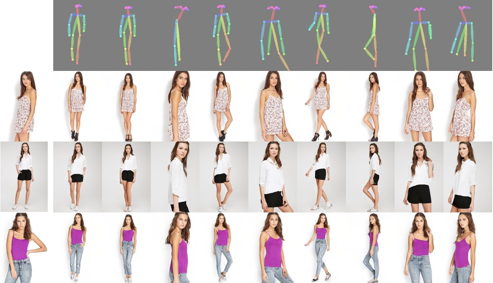
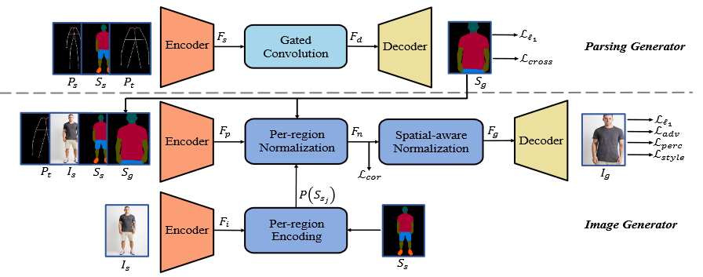
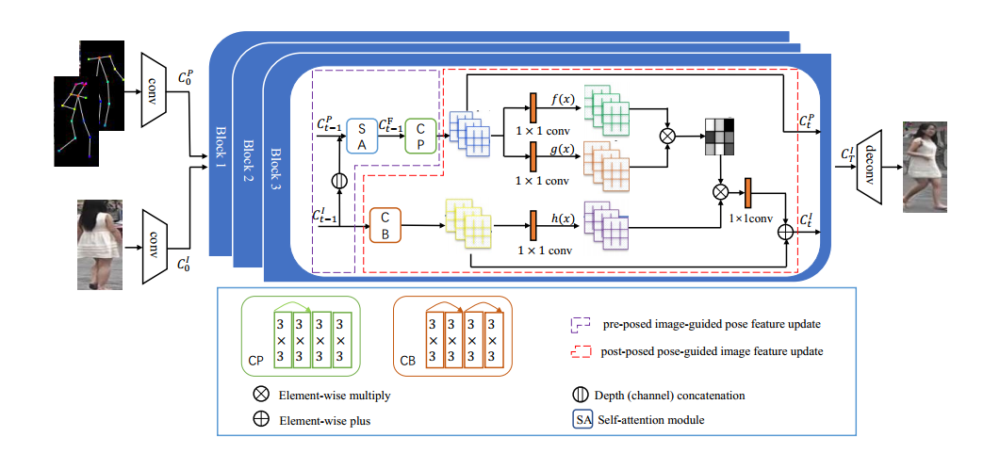
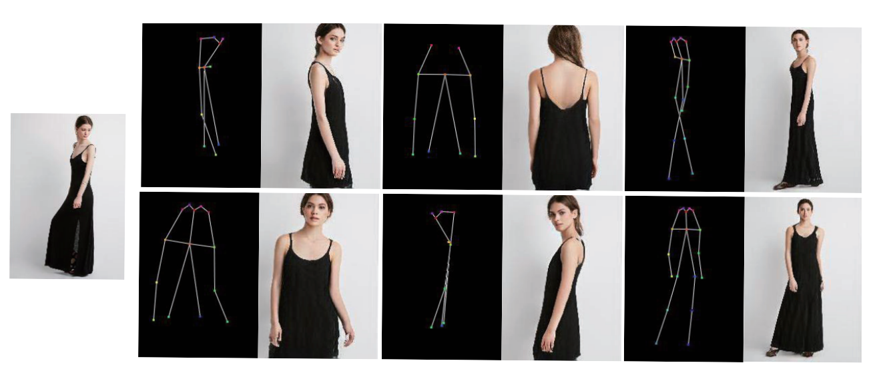

Jinsong Zhang (张劲松)
jinszhang at tju.edu.cn [Github] [Google Scholar]
About me
I am a final year Ph.D student at College of intelligence and computing, Tianjin University, China. I am advised by Kun Li. I focus on image synthesis.Go back to China After SIGGRAPH ASIA in Dec. 2024.
Visit Igarashi's lab of University of Tokyo, and supervised by [Takeo IGARASHI] in Oct. 2023 .
Finished Visiting in Tsinghua University and made a lot of friends in Dec. 2022.
Visit [Sigma Lab] in Tsinghua University in July 2022.
Education
Aug. 2021 - , Ph.D Student in College of intelligence and computing, Tianjin University
Oct. 2023 - Dec. 2024, Visit [IGARASHI Lab], University of Tokyo
Jun. 2022 - Dec. 2022, Visit [Sigma Lab], Tsinghua University
Aug. 2018 - Jul. 2021, Master Student in Tianjin International Engineering Institute, Tianjin University
Aug. 2014 - Jul. 2018, Bachelor of Engineering in School of Mathematics, Tianjin University
Publications
|  |
PISE-V: Person Image and Video Synthesis with Decoupled GAN
|
|  |
DualAvatar: Robust Gaussian Splatting Avatar with Dual Representation
|
|  |
SMixNet: Style mixture network for exemplar-based image translation
|
|  |
Multi-scale information transport generative adversarial network for human pose transfer
|
|
|
Towards Grouping in Large Scenes with Occlusion-aware Spatio-temporal Transformers
|
|  |
PISE: Person Image Synthesis and Editing with Decoupled GAN
|
|  |
PoNA: Pose-guided Non-local Attention for Human Pose Transfer
|
|  |
Human Pose Transfer by Adaptive Hierarchical Deformation
|
High-Quality Animatable Dynamic Garment Reconstruction from Monocular Videos
Xiongzheng Li, Jinsong Zhang, Yu-Kun Lai, Jingyu Yang, Kun Li
In IEEE T-CSVT 2023 [Project Page]
MH-HMR: Human mesh recovery from monocular images via multi-hypothesis learning
Haibiao Xuan, Jinsong Zhang, Yu-Kun Lai, Kun Li
In CAAI TRIT 2023 [Project Page]
Narrator: Towards Natural Control of Human-Scene Interaction Generation via Relationship Reasoning
Haibiao Xuan, Xiongzheng Li, Jinsong Zhang, Hongwen Zhang, Yebin Liu, Kun Li
In ICCV 2023 [Project Page]
High-Fidelity Human Avatars from a Single RGB Camera
Hao Zhao, Jinsong Zhang, Yu-Kun Lai, Zerong Zheng, Yingdi Xie, Yebin Liu, Kun Li
In CVPR 2022 [Project Page]
Learning Semantic-Aware Disentangled Representation for Flexible 3D Human Body Editing
Xiaokun Sun, Qiao Feng, Xiongzheng Li,Jinsong Zhang, Yu-Kun Lai, Jingyu Yang, Kun Li
In CVPR 2023 [Project Page]
MHPro: Multi-Hypothesis Probabilistic Modeling for Human Mesh Recovery
Haibiao Xuan, Jinsong Zhang, Kun Li
In CICAI 2022 (oral) [Project Page]
Learning to Infer Inner-Body under Clothing from Monocular Video
Xiongzheng Li, Jing Huang, Jinsong Zhang, Xiaokun Sun, Haibiao Xuan, Yu-Kun Lai, Yingdi Xie, Jingyu Yang, Kun Li
In TVCG 2022 [Project Page]
STATE: Learning Structure and Texture Representations for Novel View Synthesis
Xinyi Jing, Qiao Feng, Yu-Kun Lai, Jinsong Zhang, Yuanqiang Yu, Kun Li
In CVM 2022 [Project Page]
Service
- As an reviewer of journals: TIP, TMM, TCSVT
- As an reviewer of conferences: CVPR, ICCV, ACMMM, CICAI